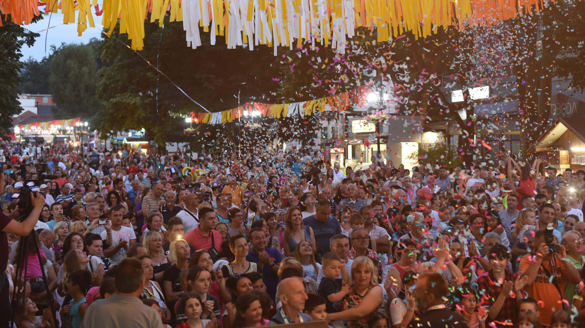
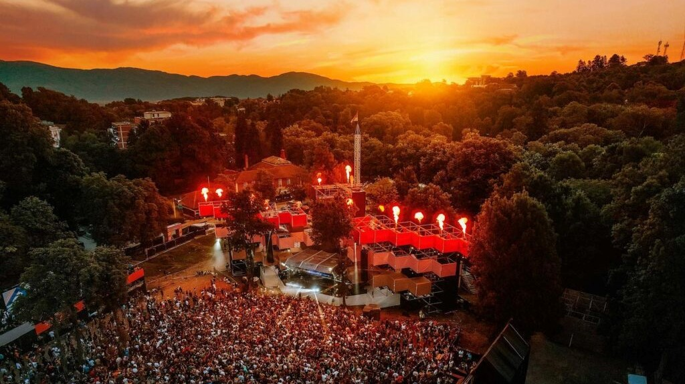
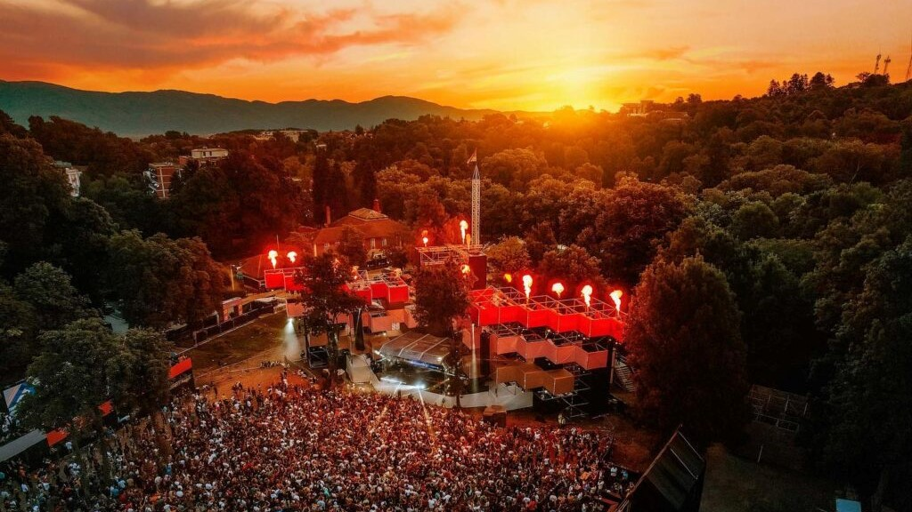
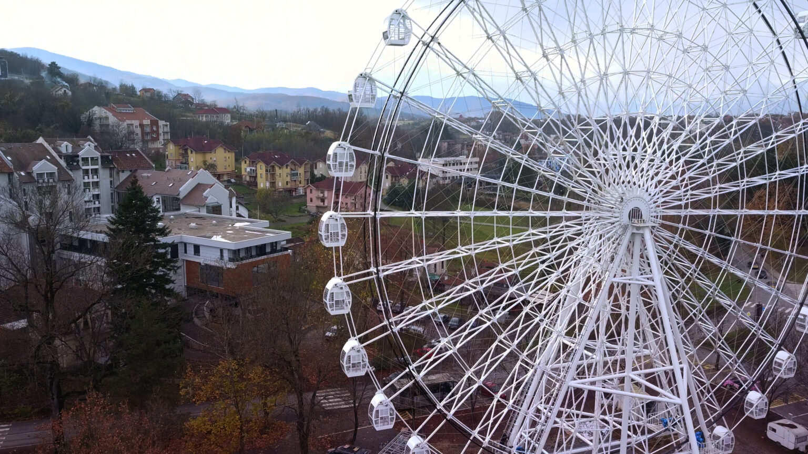
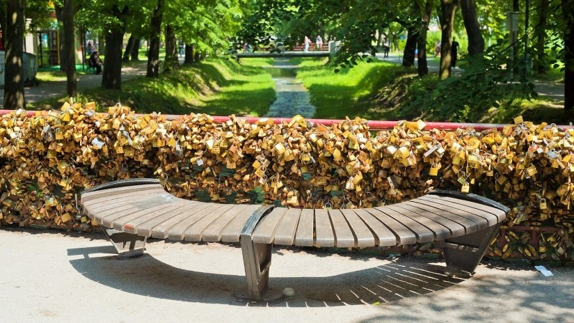
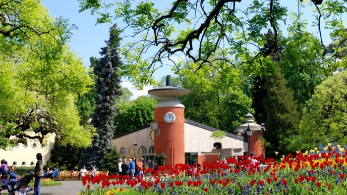
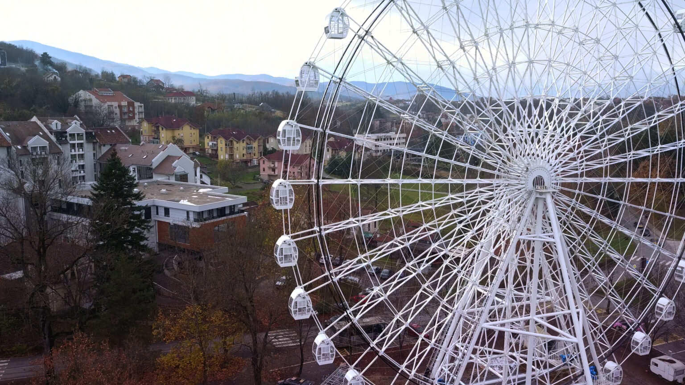
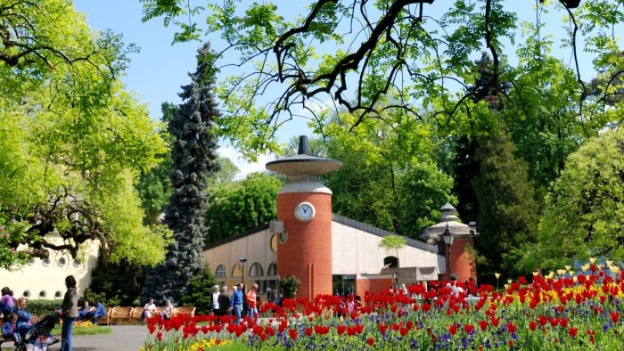

Vrnjački karneval predstavlja krunu dešavanja tokom sezone. Ova manifestacija okupi preko 200 000 posetilaca. Tokom nedelju dana u julu mesecu Vrnjačka Banja je scena na kojoj se održava veliki broj maskenbala, festivala, koncerata, predstava, sportskih dešavanja… A svakako centralni događaj karnevala je Velika međunarodna karnevalska povorka.

Centralno mesto na vrnjačkom šetalištu rezervisano je za simpatičnog vrapca koji predstavalja
svojevrstan simbol Vrnjačke Banje. Svoje ime, Gočko, dobio je po planini Goč koja se uzdiže iznad
banjskog bisera Srbije.Ovaj simpatični vrabac zapravo je nastao kao simbol i maskota Igara bez granica
koje su u Vrnjačkoj Banji održane 1990. godine.
 

Lovefest je jedinstvena kulturna platforma iz Vrnjačke Banje koja ima za cilj da promoviše muziku,
umetnost i urbanu kulturu mladih. Festival je počeo godine kao žurka Love bridge 2007. godine.
Nakon samo godinu dana nakon što je debitovao postaje jedan od najtraženijih muzičkih događaja u centralnoj Srbiji.
Lovefest je 2012. godine dobio priznanje Ministarstva omladine i sporta kao najveći omladinski festival u zemlji..
Nije slučajno nazvana kraljicom svih banja obzirom na njenu inovativnost i bogatstvo zabavnim i rekreativnim sadržajima.
Izgradnja najvećeg panoramskog točka na Balkanu je započeta još u martu 2022. godine Visok je čak 58 metara i sadrži 32
klimatizovane kabine u kojima se nalaze po četiri sedišta sa toniranim staklima koje će posetiocima pružiti udobnu vožnju
i magični pogled na celokupnu promenadu Vrnjačke Banje.


Most ljubavi, najpoznatiji most u Vrnjačkoj Banji i jedan od najpoznatijih u Srbiji, most za koji su čuli čak i oni koji
nikad nisu bili u Banji, mesto je gde zaljubljeni parovi zaključavaju svoju ljubav katancem, a potom ključ bacaju u reku.
Ovo mesto je jedan od simbola Vrnjačke Banje. Posećuju ga sve generacije: mladi kako bi „zaključali“ na njemu svoju ljubav,
a stariji zbog simpatija prema tom činu mladih i sećanja na prošle dane.
Izvor mineralne vode Topla voda nalazi se u središtu banjskog parka. Da ovaj izvor predstavlja svojevrsnu blagodet Vrnjačke Banje
govore i datiranja koja sežu u doba praistorije. Naime, temperatura vode na izvorištu
je približna telesnoj temperaturi čoveka 36,6 ˚C . Voda sa ovog izvora se koristi, kako u lečenju, tako i
u prevenciji određenih bolesti.

Centralno mesto na vrnjačkom šetalištu rezervisano je za simpatičnog vrapca koji predstavalja svojevrstan simbol Vrnjačke Banje. Svoje ime, Gočko, dobio je po planini Goč koja se uzdiže iznad banjskog bisera Srbije.Ovaj simpatični vrabac zapravo je nastao kao simbol i maskota Igara bez granica koje su u Vrnjačkoj Banji održane 1990. godine.
Lovefest je jedinstvena kulturna platforma iz Vrnjačke Banje koja ima za cilj da promoviše muziku, umetnost i urbanu kulturu mladih. Festival je počeo godine kao žurka Love bridge 2007. godine. Nakon samo godinu dana nakon što je debitovao postaje jedan od najtraženijih muzičkih događaja u centralnoj Srbiji. Lovefest je 2012. godine dobio priznanje Ministarstva omladine i sporta kao najveći omladinski festival u zemlji..
Nije slučajno nazvana kraljicom svih banja obzirom na njenu inovativnost i bogatstvo zabavnim i rekreativnim sadržajima. Izgradnja najvećeg panoramskog točka na Balkanu je započeta još u martu 2022. godine Visok je čak 58 metara i sadrži 32 klimatizovane kabine u kojima se nalaze po četiri sedišta sa toniranim staklima koje će posetiocima pružiti udobnu vožnju i magični pogled na celokupnu promenadu Vrnjačke Banje.
Most ljubavi, najpoznatiji most u Vrnjačkoj Banji i jedan od najpoznatijih u Srbiji, most za koji su čuli čak i oni koji nikad nisu bili u Banji, mesto je gde zaljubljeni parovi zaključavaju svoju ljubav katancem, a potom ključ bacaju u reku. Ovo mesto je jedan od simbola Vrnjačke Banje. Posećuju ga sve generacije: mladi kako bi „zaključali“ na njemu svoju ljubav, a stariji zbog simpatija prema tom činu mladih i sećanja na prošle dane.
Izvor mineralne vode Topla voda nalazi se u središtu banjskog parka. Da ovaj izvor predstavlja svojevrsnu blagodet Vrnjačke Banje govore i datiranja koja sežu u doba praistorije. Naime, temperatura vode na izvorištu je približna telesnoj temperaturi čoveka 36,6 ˚C . Voda sa ovog izvora se koristi, kako u lečenju, tako i u prevenciji određenih bolesti.
